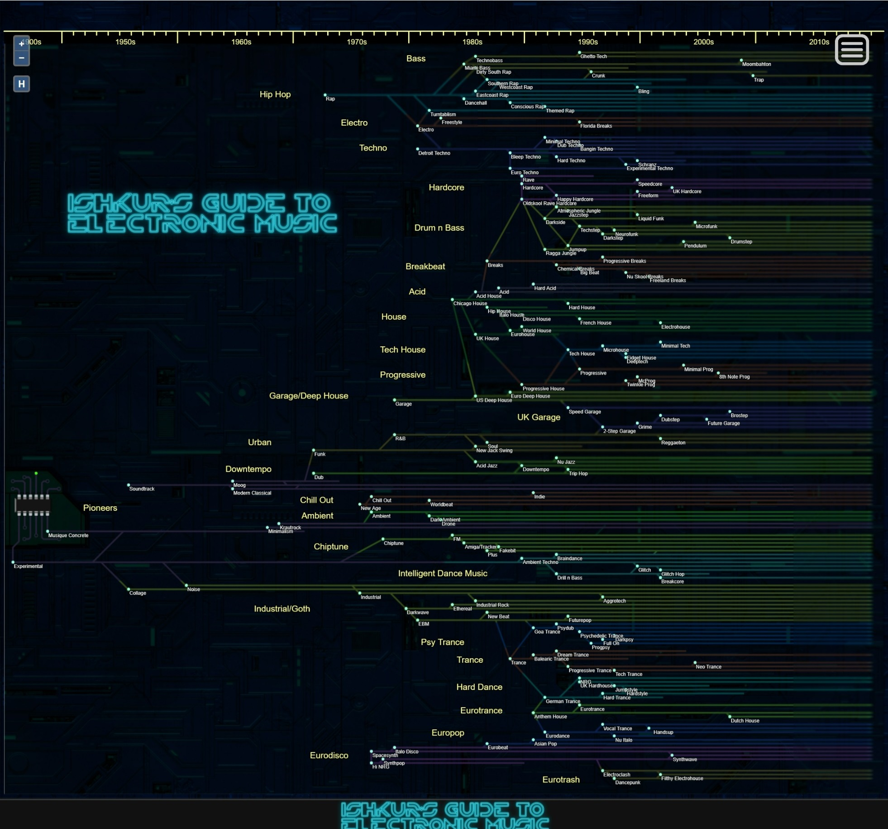
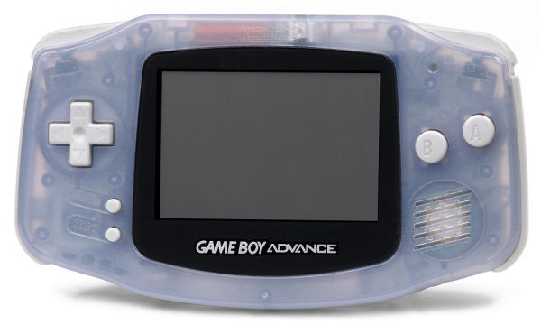

古今文字集成
西夏文字
如果你对中国古代文字感兴趣，抑或是希望对辽、金、西夏等少数民族自创的文字有所了解，不妨来这里看看！
这里收录了西夏、契丹以及女真民族的文字，以及曾专属女性使用的文字——女书。当然，汉字也是必不可少的。总而言之，这是一个文字爱好者必不可少的网站。
如果你对中国古代文字感兴趣，抑或是希望对辽、金、西夏等少数民族自创的文字有所了解，不妨来这里看看！
这里收录了西夏、契丹以及女真民族的文字，以及曾专属女性使用的文字——女书。当然，汉字也是必不可少的。总而言之，这是一个文字爱好者必不可少的网站。
|

电音的流派分支图 |
喜欢电音却不知道如何入手？想了解电音的历史却无从查起？被电音繁杂的分类震惊却不知如何厘清关系？对国内音乐平台（如某某云音乐）的分类感到怀疑? Ishkur's Guide to Elctronic Music是一个小型的网站。这里只收录了一小部分曲目，但胜在经典，覆盖面全。你可以专门了解一类音乐，也可以收听同一年发布的不同风格的曲目。不过令人遗憾的是这是个外国网站——可能需要你科学上网。 |
|

GBA游戏机 |
这个网站收集了大部分远古游戏——古老到你需要上个世纪的游戏机或者专门的模拟器才能玩。如果你想领略一下这些古老游戏的风采，可以来这里找找看。 |
这里全面地收录了英文版的宗教、神话、哲学、神秘学文献（它甚至收录了英文版的四书五经）。如果你对这些方面有着异于常人的兴趣，而且有一定的英文水平，可以来这里看看。